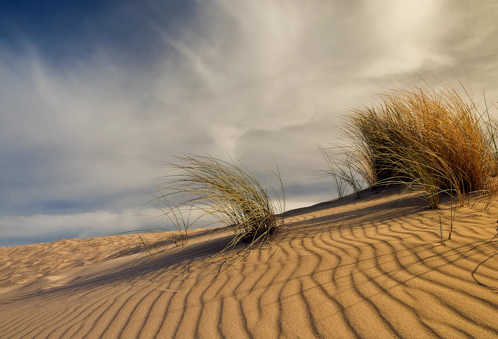

una caseta y dos vientos
Somos una escuela pequeña a propósito: pocos alumnos por monitor, material revisado cada mañana y la playa que pida el viento.

cómo empezó

Racha empezó como un remolque con tres cometas y un toldo al final de Los Lances. Daba clase quien tenía el día libre, y el único plan era no meter a nadie en el agua con un viento que no tocaba.
Esa regla sigue igual. Hoy tenemos una caseta de madera, una lancha para los días de Levante, radios en todos los cascos y material para doce alumnos a la vez. No queremos más: con más gente en el agua no se puede mirar a cada uno.
Cada mañana a las nueve alguien sale a la arena, mira el parte, mira el agua y escribe a los alumnos con la playa y la hora. Si no sopla, se dice pronto y no se cobra.
quién está en la playa
- Nerea
Monitora y jefa de playa. Decide cada mañana dónde se da la clase y quién entra al agua. Da la iniciación casi todos los días.
- Iván
Patrón de la lancha. Los días de Levante está en el agua antes que nadie. Si una cometa se va hacia fuera, la recoge él.
- Lucía
Monitora de perfeccionamiento. Graba las sesiones y las repasa contigo en la arena, fotograma a fotograma si hace falta.
- Pablo
Taller y alquiler. Revisa líneas, válvulas y barras cada mañana, y decide qué cometa sale según el viento.

el lugar
Tarifa es la punta sur de Europa, con África enfrente. El Estrecho hace de embudo y el viento casi nunca falta: el Levante llega del Mediterráneo, seco, cálido y a rachas; el Poniente llega del Atlántico, más fresco y más constante.
Entre los dos se reparten la semana, y por eso no tenemos una playa fija: con Levante, Valdevaqueros; con Poniente, Los Lances.
Ver los spots
lo que no negociamos
Si no sopla, no se cobra
La clase se mueve a otro día de tu semana o se devuelve el dinero. Te avisamos a las nueve, no en la playa.
Cuatro alumnos por monitor, como mucho
En perfeccionamiento, dos. Con más gente el monitor deja de verte y deja de corregirte.
Radio desde el primer minuto
En el agua no se oye nada. Con radio en el casco te corregimos mientras navegas, no después.
Lancha con Levante
El Levante sopla de tierra hacia el mar. Esos días hay siempre una lancha en el agua, sin excepción.
Material revisado cada mañana
Líneas, barra, sistema de suelta y válvulas. Lo que no pasa la revisión no sale de la caseta.
Te decimos lo que no te toca
Si el viento es demasiado para tu nivel, te lo decimos aunque eso suponga no vender la clase.